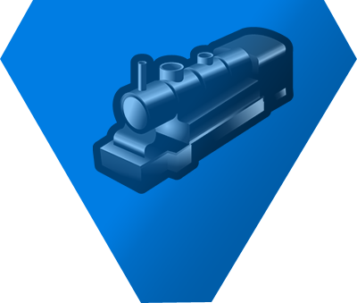
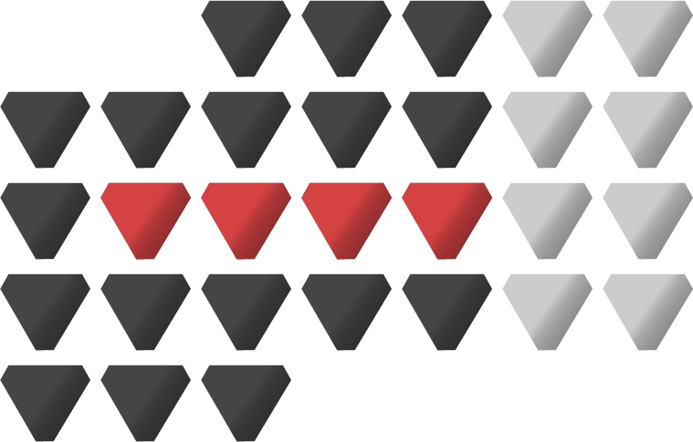
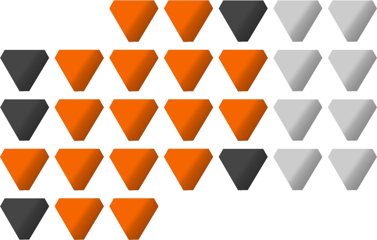
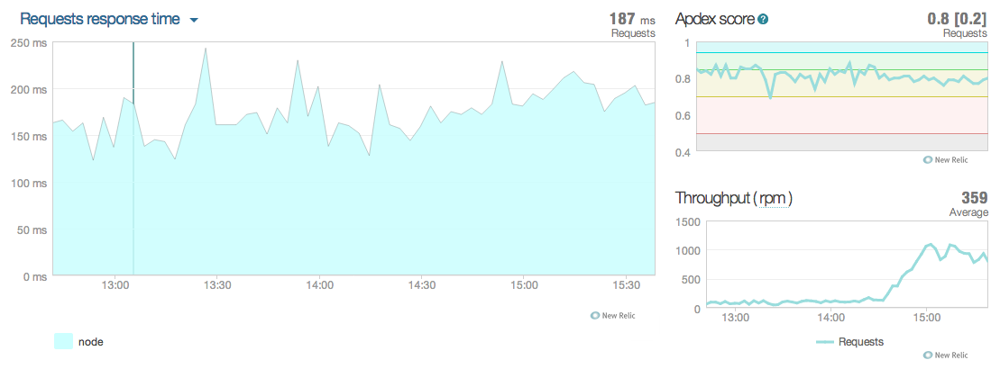
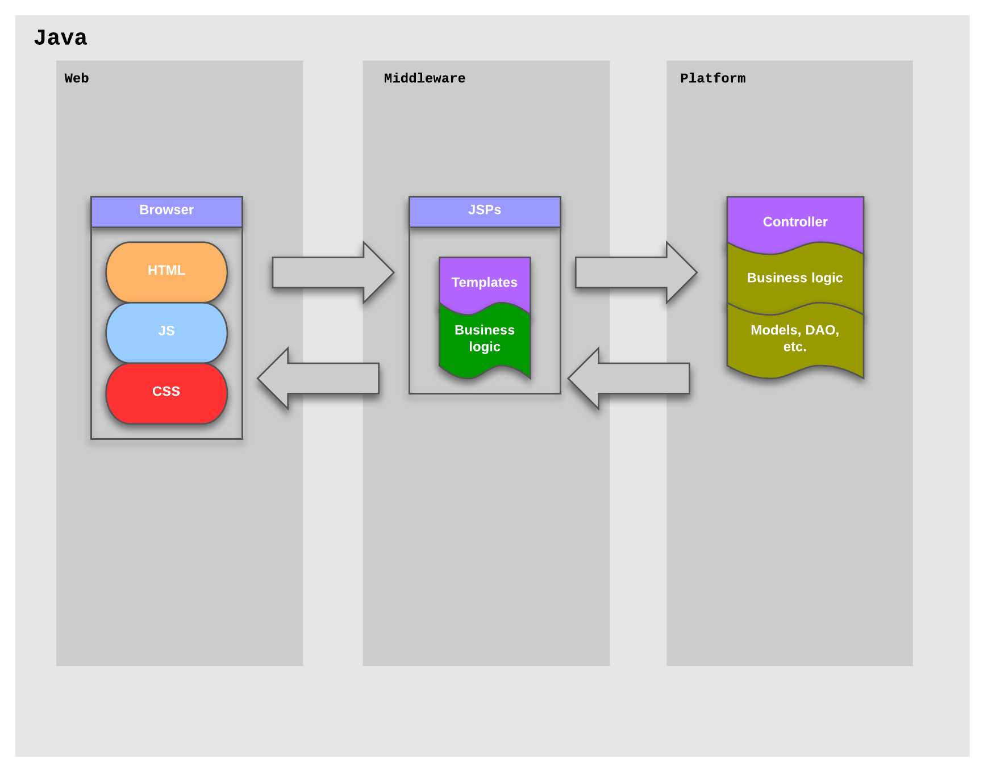
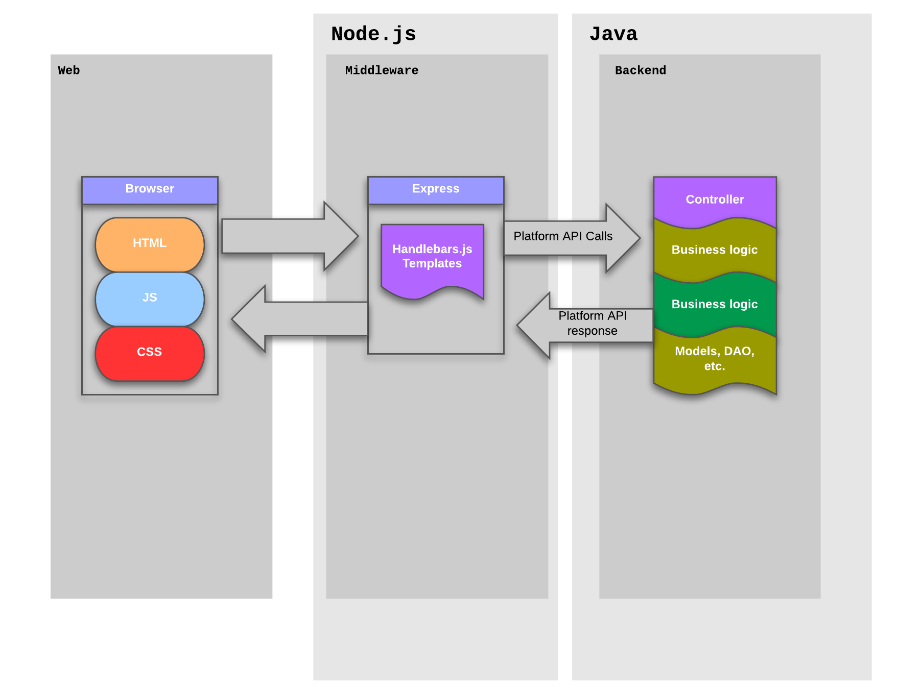

Limbo
Summary
- What's Limbo
- What was achieved
- Roadmap
What the hell is this limbo/tetra stuff ?
Limbo is the nodejs app living on prod since 3 months
Core modules
|
Web server |

MVC web framework |
Templating engine |
Translation lib |
Other components
Tetra-modules
(that is the tetra stuff)
Lusca
(application security for express apps, by Paypal)
Backbone
(JS lib, replaces tetra-js)
Ember
(JS lib, client-side only apps)
Tetra modules
- UI (UI rendering toolkit)
- Error (Express error rendering)
- Config (Configuration validation and management)
- Routing (Routing helper)
- Templating (Auto-discovery and naming of partials and helpers)
- grunt-tetra-lang (building merged i18next localization files for client and server)
What was achieved
Original goals (light version)
- Split presentation logic from business logic
- Improve friendlyness of the dev. environment
- End duplication of resources between server and browser
Today, a more simple stack
- 1 business api
- 1 scripting language
- Based on simple conventions (controllers, services, middleware)
- Testable and tested
Templating libs before
- JSP (server)
- Prototype.js (browser)
- EJS (browser)
- Handlebars (browser)
Templating libs after

Handlebars (server and client)
Translation (client and server)
1 key, a context, done.
Translators can handle any combination by themselves
|
Build + server launch |
|
|
Server restart |
|
|
Page reload |
Coffee breaks
Rollouts
Rollouts
Current Limbo apps
- Landing pages
- Signup
- Companies who recruit
- Face to face
- Onboarding
- ... new backoffice platform
Roadmap
At 1 month
- Software engineering
- TDD methodology trainings
- Navigation tests structuring improvements
- Simplification of limbo project structure
- Feature flipping
- Environment
- Safe sync deployment with platform
- Stress tests
- Build time improvements on dev
- BO first projects (landing pages)
After
- Componentize tetra-ui
- View-Model
- Standardise validation for mutable actions
- Client/server sides validation
- Security improvements (Paypal Lusca extend + express conventions)
- Extensible SEO filter
- Errors logging tools and conventions
- tetra-test module
Appendix


